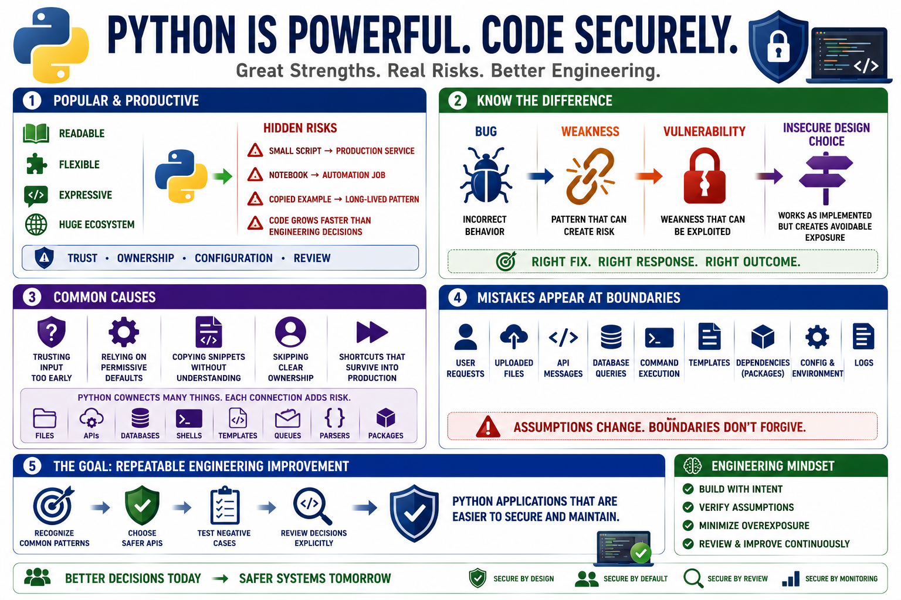

Why Python Security Mistakes Happen
Connecting to LMS... Progress: in progress

Narration
Python is popular because it is readable, flexible, expressive, and supported by a huge ecosystem. Those strengths help teams build useful software quickly, but they can also hide risky assumptions. A small script can become a production service. A notebook experiment can become an automation job. A copied example can become a long-lived pattern. Security mistakes often appear when code grows faster than the engineering decisions around trust, ownership, configuration, and review.
It is useful to separate a bug, a weakness, a vulnerability, and an insecure design choice. A bug is incorrect behavior. A weakness is a pattern that can create risk under the right conditions. A vulnerability is a weakness that can be used to violate a security expectation. An insecure design choice may work as implemented but still create avoidable exposure. These categories overlap, but the distinction helps teams respond with the right fix instead of treating every issue as the same kind of defect.
Common causes include trusting input too early, relying on permissive defaults, copying snippets without understanding their assumptions, skipping clear ownership, and allowing development shortcuts to survive into production. Python makes it easy to connect files, APIs, databases, shells, templates, queues, parsers, and third-party packages. Each connection is useful, but each connection also creates a place where assumptions can change.
Most mistakes appear at boundaries: user requests, uploaded files, API messages, database queries, command execution, templates, package dependencies, configuration, environment variables, and logs. The goal of this course is not blame. The goal is repeatable engineering improvement. When teams can recognize common patterns, choose safer APIs, test negative cases, and review decisions explicitly, Python applications become easier to secure and easier to maintain.